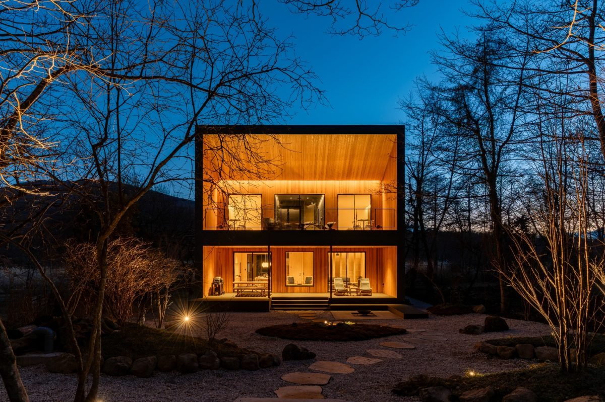

- Address
683-53 Hirano, Yamanakako-mura, Minamitsuru-gun, Yamanashi 401-0502
- Phone
Host +81 80-3407-7572
- Check-in and check-out
Check-in from 15:00 · check-out by 10:00 · free parking for 4 cars
HOTEL SEION Fuji

At the front desk
Rooms and beds
- Nights
- 20–22 Dec
- Stay
- Lake Yamanaka · house
- Rooms
- The whole house, all 7 together
Good to know
Arrival reply · open
HOTEL SEION arrival reply bounced. Roy is re-sending it through Airbnb (23 Nov). Still open.
Notes and sources
Stay notes and saved evidence
Lake Yamanaka instead of Hakone (28 Sep): Roy booked HOTEL SEION Fuji, a whole Japanese-modern house with a garden, sauna and BBQ at Lake Yamanaka, for Sun 20–Wed 23 Dec, 5 adults + 2 children (max 8), RM 16,978.56 (≈ JPY 660,644 · ≈ SGD 5,351.22), payment scheduled Thu 12 Nov. The Hakone house (HM4TQHRR3N, RM 9,978.39 (≈ JPY 388,264 · ≈ SGD 3,144.94)) was cancelled the same evening before any charge. Check-in 15:00, check-out 10:00. Free cancellation before 3:00 PM Fri 20 Nov 2026; partial refund before 3:00 PM Sun 13 Dec 2026. No breakfast; shops and restaurants are about a 20-minute walk, and the host offers a BBQ meat plan (JPY 3,300 (≈ SGD 26.73 · ≈ MYR 84.81) per person, book 3 days ahead) or a private chef (from JPY 22,000 (≈ SGD 178.20 · ≈ MYR 565.40) per person, min 4, book a week ahead). Swimwear is required in the sauna.
Lake Yamanaka · HOTEL SEION Fuji
Whole Japanese-style house for all of us, with a garden, sauna (bring swimwear) and BBQ; views towards Mt Fuji
Check-in from 15:00 · check-out by 10:00 · no breakfast; shops about 20 min walk
Sun 20 Dec
Optional stops
Optional stops
Booked HOTEL SEION Fuji, a private house
Confirmed Airbnb HM4DFEPDKJ, HOTEL SEION Fuji, booked 28 Sep (replaces the Hakone house, cancelled with nothing charged)
Booking checks
- Night
- Sun 20 Dec 2026
- Working route
- Lake Yamanaka (Mt Fuji)
- Saved bed evidence
- HOTEL SEION Fuji, Airbnb HM4DFEPDKJ — booked 28 Sep for 20–23 Dec, 5 adults + 2 children (replaces the Hakone house).
- Coverage for 7
- 7 / 7 at Lake YamanakaConfirmed
- Conflict / gap
- Covered. Airbnb
- Night
- Mon 21 Dec 2026
- Working route
- Lake Yamanaka
- Saved bed evidence
- HOTEL SEION Fuji, Airbnb HM4DFEPDKJ (confirmation email 28 Sep).
- Coverage for 7
- 7 / 7 at Lake YamanakaConfirmed
- Conflict / gap
- Covered, same booking.
- Night
- Tue 22 Dec 2026
- Working route
- Lake Yamanaka
- Saved bed evidence
- HOTEL SEION Fuji, Airbnb HM4DFEPDKJ (confirmation email 28 Sep).
- Coverage for 7
- 7 / 7 at Lake YamanakaConfirmed
- Conflict / gap
- Covered, same booking.
Lake Yamanaka (Mt Fuji) · HOTEL SEION Fuji (Airbnb)
Google Maps ↗